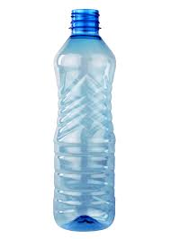
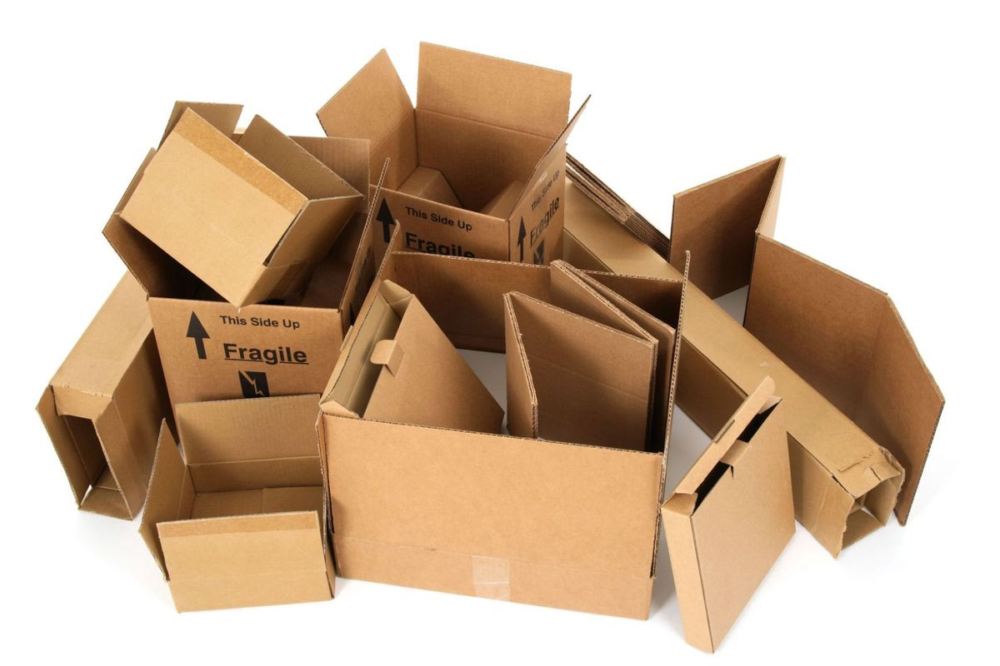
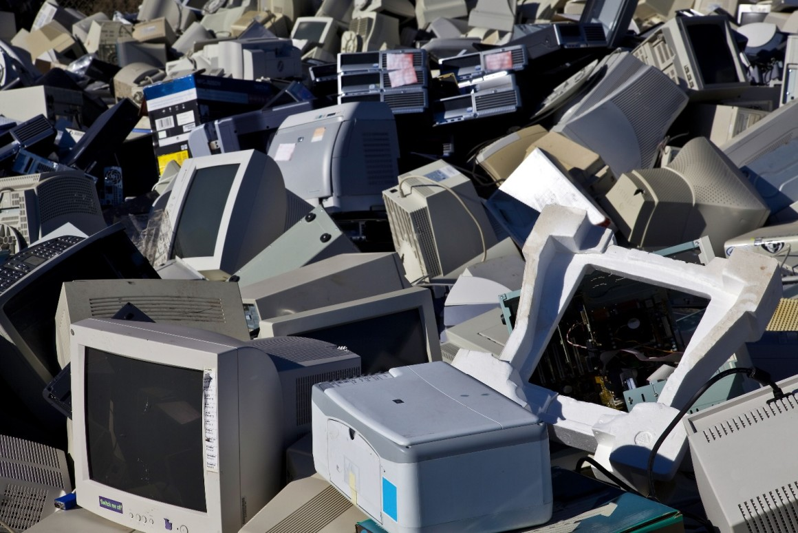

Web3-Assignment-1
Plastic

-
Five plastic bottles (PET) recycled provides enough fiber to create one square feet of carpet or enough
fiber fill to fill one ski jacket.
-
Americans throw away 2.5 million plastic bottles every hour.
Cardboard

-
Recycling cardboard only takes 75% of the energy needed to make new cardboard.
-
Recycling 1 ton of cardboard saves 46 gallons of oil.
eWaste

-
In 2007, 82% equalling 1.8 million tons of ewaste (various electronics e.g. TVs, cell phones, computers etc) ended up in landfills.
-
In 1998, the National Safety Council study estimated about 20 million computers became obsolete within 1 year. In 2007, that number increased to 40 million.
Hard to Recycle Items
-
Did you know that more than 80 percent of mattresses can be recycled? Instead of sending them to the landfill, click here to find out how to properly dispose of your mattresses.
Glass
-
Glass can be recycled and re-manufactured an infinite amount of times and never wear out.
-
Making glass from recycled material cuts related water pollution by 50%.
Reduce Reuse Recycle - Facts
-
Each year, Americans throw away 25 trillion Styrofoam cups.
-
Every Sunday, Americans waste 90 percent of recyclable newspapers. This wastes 500,000 trees!
-
Every year more than 900 million trees are cut down to provide raw materials for American paper and pulp mills.
Paper
-
Americans throw away enough office paper each year to build a 12 foot high wall from Seattle to NY (a new wall every year).
-
Making paper from recycled paper reduces the related contribution to air pollution 95%.
Cans
-
Every three months, Americans throw enough aluminum in the landfills to build our nation’s entire commercial air fleet.
-
It requires 95% less energy and water to recycle a can than it does to create a can from new materials.